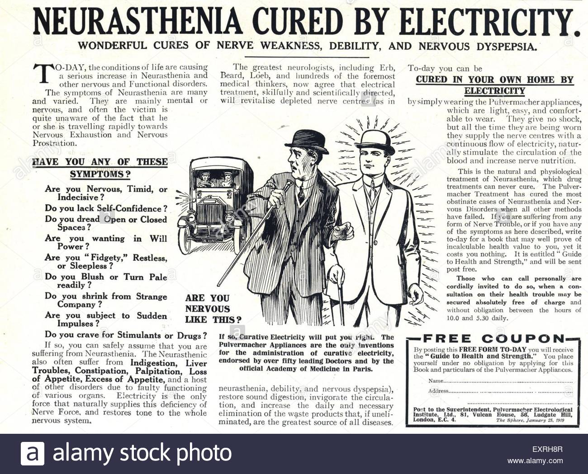

Adventuring The New Theory
In 2021, there was a physicist named Jame Dame who was working on some scientific
reseach and while doing those research he came to think of a theory. In his line of thinking and reasoning
he thought that human beings can be good conductors of electricity. So he began his adventure
in to this line of thinking and started to figure out some of the ways by which he can carry out
the experiment to prove this theory. One way to carry out this experiment was to take himself as the
subject to test the theory. Upon thinking on when to publish this theory he came up with two choices.
choice 1:
To test himself if he can conduct electricity without dyingchoice 2:
Not to publish this new discovery if he can't do choice 1 but continue find posible ways of doing the experiment
After some carefull decision on the choices above, he decided not to publish this theory. Therefore
it is up to other scientist who are willing to take on this research and prove to others that humans can
actually be conductors of electricity. However Jame Dame outline some points to take note of in doing this experiment.
These includes.
- Make sure the subject is a living person to conducting the research.
- Don't do it if you change your mind.
- The theory has nothing to do with any researcher failing his/her experiment.
- This is just a theory, thus carefull experiment should be done. `
and how this theory came about will be publish on this Adventure site. So stay up to date with us to catch this amazing dicovery!.